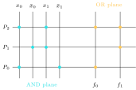

Construction
Every input enters the AND plane in true and complemented form. Each AND line computes a product term (a cube); each output is the OR of selected products.
- PROM: AND plane fixed (all
 minterms), OR plane programmable — the memory case.
minterms), OR plane programmable — the memory case. - PLA: both planes programmable. Products are shared among outputs, so the number of AND lines is the number of distinct cubes of a minimised multi-output cover. Slower (two programmable planes).
- PAL: AND plane programmable, OR plane fixed — each output ORs a fixed group of, say, 7 products. Faster and cheaper; products cannot be shared. Outputs fed back as inputs implement multilevel functions, at the cost of extra delay through the array; registered outputs make sequential circuits (GAL, 22V10).
- CPLD: several PAL-like blocks connected by a programmable interconnect.
Picture

 and a programmable OR plane sums them into the outputs ; a PAL fixes the OR plane.
and a programmable OR plane sums them into the outputs ; a PAL fixes the OR plane., , ; , : is shared, which a PLA allows.
Example
A full adder:  needs four products (its four odd minterms), three. A PLA with 7 AND lines and 2 outputs implements it; a PAL needs at least 4 products per output.
needs four products (its four odd minterms), three. A PLA with 7 AND lines and 2 outputs implements it; a PAL needs at least 4 products per output.
Intuition
A PLA is a minimised truth table in hardware: only the product terms you need, wired to the outputs that need them.
Pitfall
Two-level forms of some functions are huge: the parity of  bits needs products. Such functions belong in multilevel logic.
bits needs products. Such functions belong in multilevel logic.